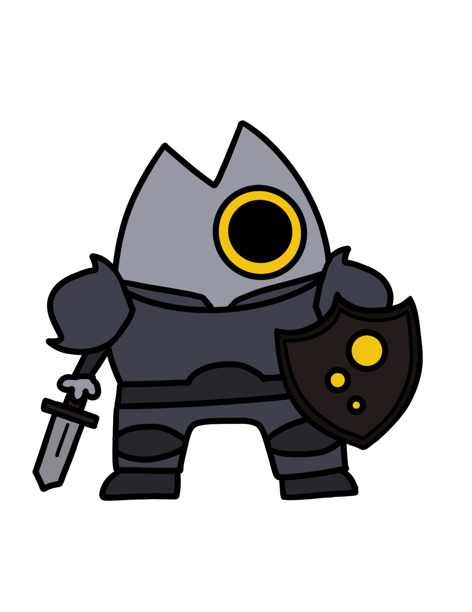
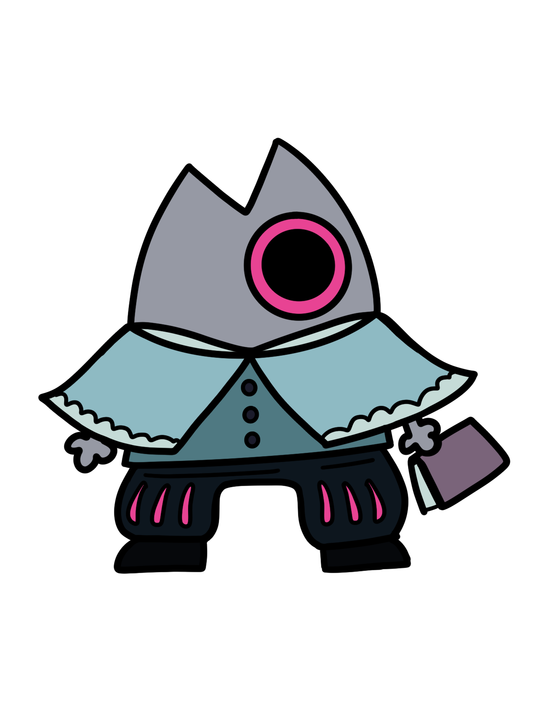
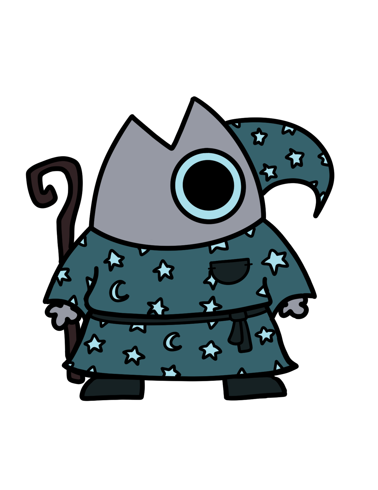

Coming to you soon in the future...
Since this is an app that's primarily based around long time use,
the Insights Page isn't able to be properly loaded in since we would need to show long term functionality, which
given the scope of the class and the time we had to finish the project, it was not feasible.
However, this is a peek into what it would look like given time!
Streaks
You are a New Adventurer!
As the sun rises in the horizon and a curious gleam in your eye, you set out on a new adventure to build improve skills, ready to learn more!
Your longest streak is 3 days!
Keep continuing your journey, Ann! The world waits for your adventures.
Adventure Nodes
You are a Fighter!
Taking the road less travelled, your zest for adventure leads you in series of trials to test your mettle and strengthen your mind.
You've selected the Challenge Node 84% of the time through your streaks!
Habit Topics
You're building your Psychic skills!
In a turbulent sea filled with uncharted waters, you forge through the storm, wielding your strength and trust in your abilities.
You seem to primarily do habits in Mindfulness! From Journalling to Meditation, you're making strides in taking care of yourself!
Streaks
You are a Seasoned Adventurer!
You hold the memories of your adventures fondly in your chest, and step forth for the new day ahead of you!
Your longest streak is 65 days!
What an accomplishment! Keep going- see how far you can go!
Adventure Nodes
You are a Bard!
Stories and memories make up the fabric of your soul, tugging you to find the next new ballad to write about!
You've selected the Event Node 75% of the time through your streaks!
Habit Topics
You're building your Nature skills!
Travelling through the woods and glades, the rustles of the leaves and the chirps in the distance bring you a sense of peace.
You seem to primarily do habits pertaining to the Outdoors! From Walking to Gardening, you're reconnecting to the natural world around you!
Streaks
You are a Novice Adventurer!
Your enthusiasm knows no bounds as you leap forwards into a new adventure, raring to go !
Your longest streak is 14 days!
Your persistence is well congratulated! Keep going, adventurer!
Adventure Nodes
You are a Wizard!
Magic flows from your fingertips, bending the rules of the world to your whims. To harness such a power safely, you give your body adequate rest and time to study.
You've selected the Rest Node 53% of the time through your streaks!
Habit Topics
You're building your Charisma skills!
In midst of a bustling crowd, you find that your words carry far and strong, charming and befriending the people and cute animals around you.
You seem to primarily do habits pertaining to Socializing! From Book Club to Calling Friends, you're strengthening your connection with others!
Streaks
You are a Returning Adventurer!
You pick up the adventure once again, feeling the call tug at your heart as the world waits for you patiently.
Your longest streak is 1 day!
Beginning is always the hardest! You're doing great- keep going!
Adventure Nodes
You are Yourself!
It's you! Whatever brought you here, the call of adventure, the thrill of learning, or just a resolve to keep promises to yourself, you choose to try and do good by yourself!
You've selected the Standard Node 100% of the time through your streaks!

Habit Topics
You're building your Life skills!
The smell of a good meal, the satisfaction in repairing a broken object, the confidence you have in your own skills bolsters you with determination.
You seem to like habits pertaining to Life Skills! From Cooking to Knitting, you're building the skills that will be useful to you as you grow!